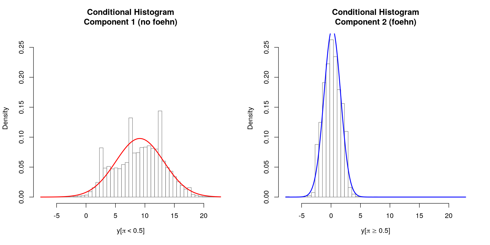
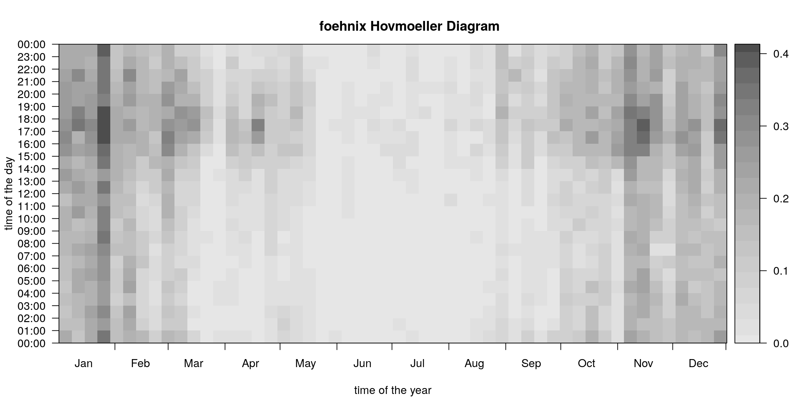
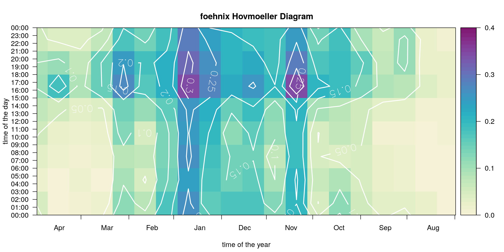

vignettes/viejas.Rmd
viejas.RmdLoading the Data Set
demodata("california") returns a data set which combines hourly meteorological observations for the two sites “Viejas Casino and Resort” and “Lucky Five Ranch” which serves as the crest station.
In addition, the potential temperature difference between the two stations is calculated by reducing the dry air temperature from “Lucky Five Ranch” to the height of “Viejas” (dry adiabatic lapse rate of 1K per 100m; stored on diff_t).
## air_temp relative_humidity wind_speed wind_direction
## 2012-01-01 00:00:00 23.89 25 1.34 227
## 2012-01-01 01:00:00 20.00 22 2.68 43
## 2012-01-01 02:00:00 19.44 15 4.02 35
## wind_gust crest_air_temp crest_relative_humidity
## 2012-01-01 00:00:00 2.68 16.67 17
## 2012-01-01 01:00:00 4.02 14.44 21
## 2012-01-01 02:00:00 6.70 13.89 20
## crest_wind_speed crest_wind_direction crest_wind_gust
## 2012-01-01 00:00:00 5.81 91 8.94
## 2012-01-01 01:00:00 0.90 49 2.68
## 2012-01-01 02:00:00 0.90 154 2.68
## diff_temp
## 2012-01-01 00:00:00 0.08
## 2012-01-01 01:00:00 1.74
## 2012-01-01 02:00:00 1.75
Estimate foehnix Model for Foehn Classification
We will use the following model assumptions:
- Main variable to separate “foehn” and “no foehn” cases:
diff_t(potential temperature difference). - Concomitant variable:
wind_speed(wind speed at target station Viejas). - Wind filter: the
wind_directionat station Viejas has to lie within 305 and 160 degrees (easterly wind direction; downslope). - Option
switch = TRUEas highdiff_tempindicate stable stratification (no foehn).
mod <- foehnix(diff_temp ~ wind_speed,
data = data, switch = TRUE,
filter = list(wind_direction = c(305, 160)))Which gives us the following model:
mod##
## Call: foehnix(formula = diff_temp ~ wind_speed, data = data, switch = TRUE,
## filter = list(wind_direction = c(305, 160)))
##
## Number of observations (total) 61368 (184 due to inflation)
## Removed due to missing values 2205 (3.6 percent)
## Outside defined wind sector 27905 (45.5 percent)
## Used for classification 31258 (50.9 percent)
##
## Climatological foehn occurance 9.32 percent (on n = 59163)
## Mean foehn probability 9.41 percent (on n = 59163)
##
## Log-likelihood: -86157.2, 6 effective degrees of freedom
## Corresponding AIC = 172326.5, BIC = 172376.6
## Time required for model estimation: 7.0 seconds
##
## Use summary(object, detailed = TRUE) to get additional test statistics.Time Series Plot
The Californian demo data set has non-standard variable names (by purpose). Thus, when calling tsplot (time series plot) we do have to manually specify these names.
# Some smaller quality issues in the data (should not be a big deal)
start <- as.POSIXct("2012-01-01")
end <- as.POSIXct("2012-01-15")
# As we dont have the standard names: re-specify the
# names for this plot (new feature).
tsplot(mod, style = "advanced", diff_t = "diff_temp",
t = "air_temp", crest_t = "crest_air_temp",
dd = "wind_dir", crest_dd = "crest_wind_dir",
ff = "wind_speed", crest_ff = "crest_wind_speed",
ffx = "wind_gust", crest_ffx = "crest_wind_gust",
rh = "relative_humidity",
start = start, end = end)
Model coefficients
coef(mod)## Coefficients of foehnix model
## Model formula: diff_temp ~ wind_speed
## foehnix family of class: Gaussian
##
## Coefficients
## mu1 sigma1 mu2 sigma2 (Intercept) wind_speed
## 9.1263349 4.0800074 0.2234891 1.4175373 -7.8449992 3.3753179Graphical Model Assessment
# Log-likelihood contribution
plot(mod, which = 2L)
# Coefficient path
plot(mod, which = 3L)
# Histogram
plot(mod, which = 4L)
Wind Rose Plot
windrose(mod, dd = "wind_direction", ff = "wind_speed",
type = "hist", which = c("foehn", "nofoehn"),
windsector = list(c(305, 160)))
Hovmöler Diagram
# Default plot
image(mod)
Customized plot which shows the “foehn frequency” for the interesting time period from August to April with custom colors and additional contour lines and custom aggregation period (two-weeks, 3-hourly).
image(mod, deltad = 14L, deltat = 3*3600, contours = TRUE,
contour.col = "white", lwd = 2, labcex = 1.5,
col = colorspace::sequential_hcl(51, "Purple-Yellow", rev = TRUE),
xlim = c(212, 119), zlim = c(0, 0.4))